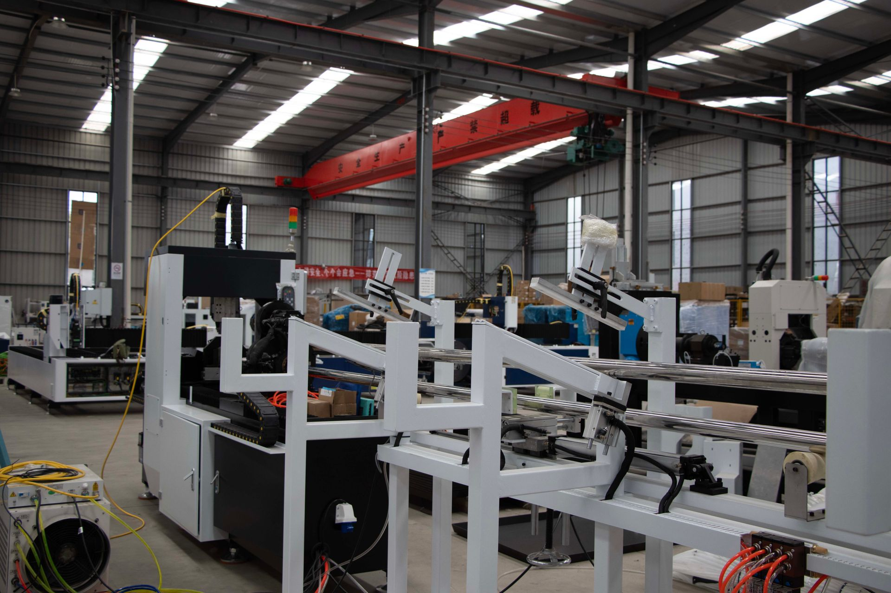
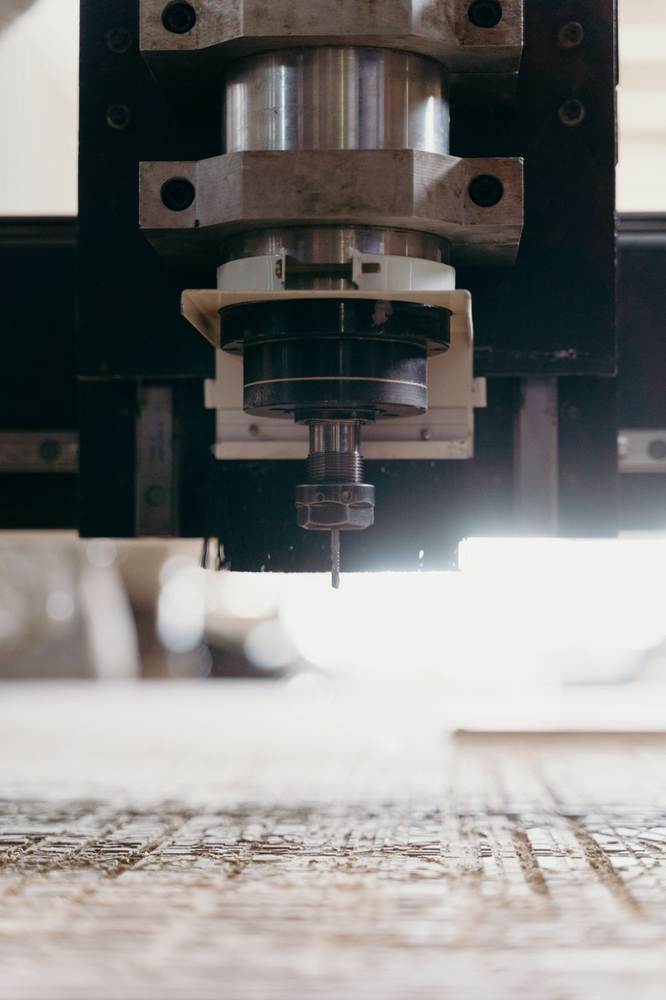
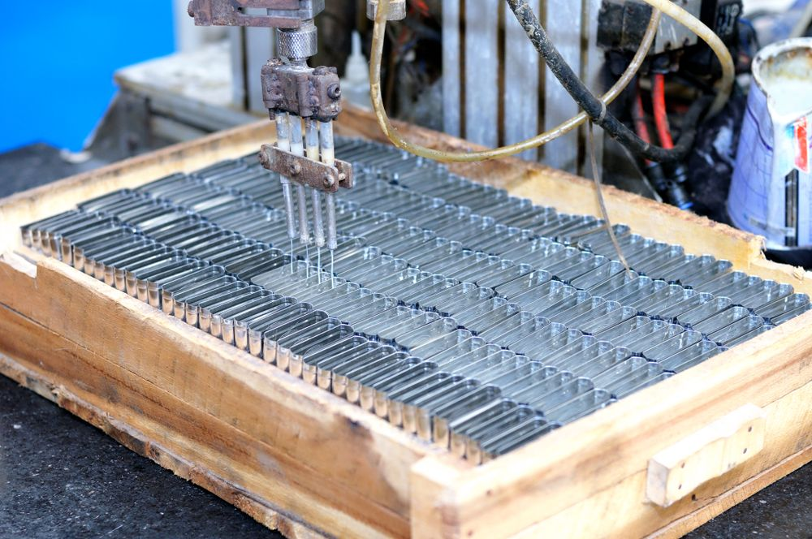
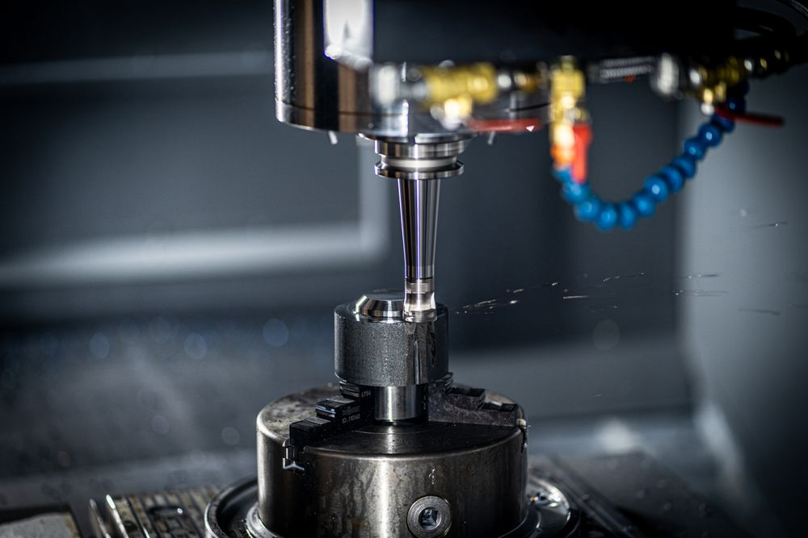

01
±0.01mmの加工精度
熟練職人の手仕上げとCNC設備の数値制御を組み合わせ、図面公差ぎりぎりの精密部品に対応します。

SINCE 1976 / PRECISION MANUFACTURING
東大阪の一台の汎用旋盤から始まり、半世紀近く。自動車・半導体製造装置・医療機器の分野で、±0.01mmの精密切削加工と板金加工を一貫して手がけています。
Why Solidus
試作の1個から量産まで。図面と向き合う職人の技術と、数値で裏づける品質管理体制の両輪で、取引先の「作りたい」を形にします。
01
熟練職人の手仕上げとCNC設備の数値制御を組み合わせ、図面公差ぎりぎりの精密部品に対応します。
02
試作1個からの単発対応から量産まで、生産計画に合わせて柔軟にラインを組み替えられる体制です。
03
ISO9001に準拠した検査工程と三次元測定機により、加工から出荷まで数値でトレースできます。
±0.01mm
加工精度
50年
創業からの歩み
320社+
累計取引先数
85名
従業員数
Works
自動車部品から医療機器の精密部品まで、幅広い分野の加工実績があります。

CNC精密切削 / 自動車部品

自動化ライン加工 / 産業機械部品

高精度切削 / 半導体製造装置部品
News
2026.03.02
お知らせ
三次元測定機を増設し、検査体制を強化いたしました。
2025.11.10
採用
2027年新卒採用エントリーを開始しました。
2025.08.20
お知らせ
夏季休業のお知らせ(8月13日〜8月17日)。